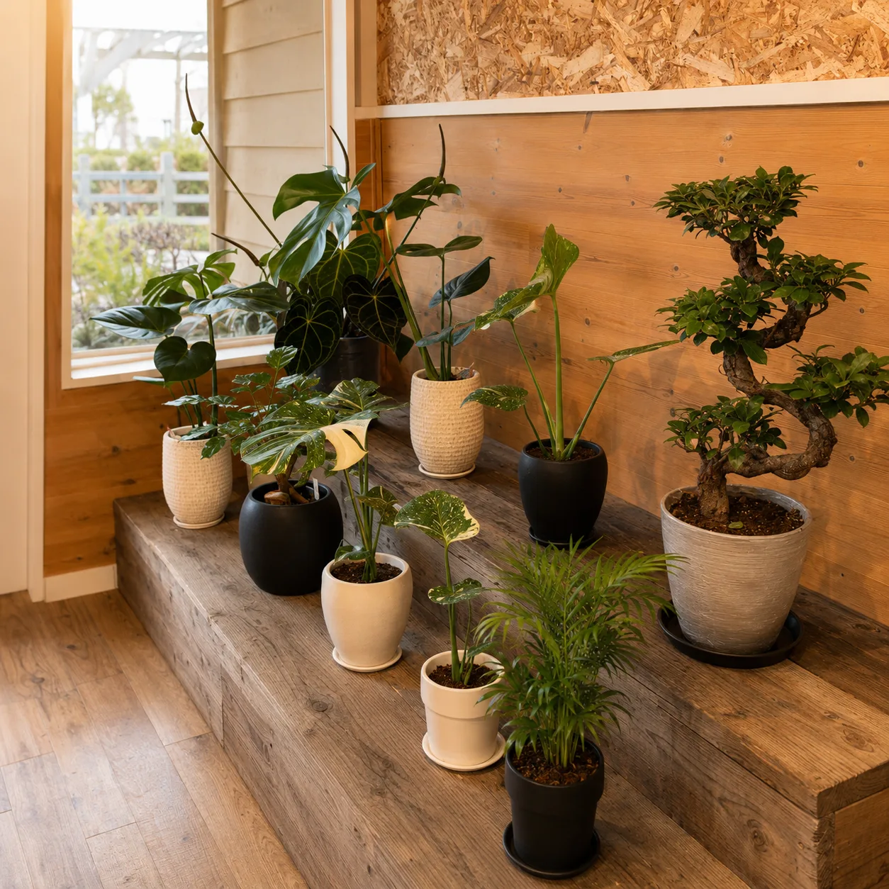

セロームの育て方｜大きく広がる葉を元気に保つ置き場所と水やり

切れ込みの入った大きな葉が魅力のセローム。この記事では、セロームを元気に育てる置き場所と水やりのコツ、葉の調子が悪いときの見直し方、熊本の冬の越し方までをまとめました。
セロームはどんな植物？モンステラとの違い
セロームは、深い切れ込みの入った大きな葉を、株の中心から放射状に広げる観葉植物です。モンステラと同じサトイモ科の仲間で、「フィロデンドロン・セローム」という名前でも流通しています。原産は南米の暖かい地域で、育て方を考えるうえでは「フィロデンドロンの仲間」と覚えておけば十分です。
モンステラとよく比べられますが、見分けるポイントは葉の形です。モンステラの葉は丸みのある形に切れ込みや穴が入るのに対して、セロームの葉は縁から細かく羽のように裂けていきます。また、セロームは茎が上へまっすぐ伸びるより、幹が太くなりながら葉を横へ広げていく育ち方をします。
小さな鉢で迎えても、環境が合うと葉が一枚ごとに大きくなり、育つと横幅が1mを超えることもあります。置き場所を決めるときは、今の大きさより「一回り広がったとき」を想像して、左右に余白をとっておくと後で困りません。
置き場所はどこがいい？日当たりと避けたい場所
置き場所の目安は、レースカーテン越しにやわらかい光が入る明るい室内です。日陰にもある程度耐えますが、暗い場所に長く置くと、葉柄（葉を支える軸）がひょろりと伸びて葉が小さくなり、株全体が間延びした姿になります。
- いちばんのおすすめ：レースカーテン越しの窓辺
- 次の候補：窓から少し離れた、日中は照明なしで過ごせる明るさの場所
- 暗い部屋に飾りたいとき：基本の置き場所は明るい場所にして、暗い部屋には短い間だけ飾る。日中も暗い部屋なら植物用のライトで光を足す
反対に、避けたい場所もあります。
- 夏の直射日光や西日が強く当たる窓辺（葉が白っぽく焼けて、元に戻らない）
- エアコンや暖房の風が直接当たる場所（葉先が乾いて茶色くなりやすい）
- 人がよく通る狭い通路（大きく広がった葉が当たって折れやすい）
春から秋の暖かい時期は、ベランダの明るい日陰で育てることもできます。ただし、室内から急に屋外へ出すと葉焼けしやすいので、最初は日陰から始めて、数日かけて慣らしてください。

水やりの頻度は？季節ごとの目安
水やりは「何日に1回」と決めるより、土の乾き具合を見て決めるのが失敗しないコツです。セロームは葉が大きく、よく育つ時期にはたくさん水を吸いますが、土がいつも湿っている状態は苦手です。
- 土の表面を指で触り、乾いているか確かめる（指を第一関節まで入れて、中が湿っていればまだ待つ）
- 乾いていたら、鉢底から水が流れ出るまでたっぷり与える
- 受け皿にたまった水は、そのままにせず捨てる
水をあげた直後と、乾いたときの鉢を持ち比べておくと、表面だけでなく鉢の中の乾き具合も重さで分かるようになります。
季節ごとの目安は次のとおりです。
- 春〜秋（よく育つ時期）：土の表面が乾いたらたっぷり。真夏は乾きが早いので、こまめに土を確かめる
- 冬（生育が鈍る時期）：上の手順は同じで、表面が乾いてから、さらに数日あけて与えるくらいが目安
冬に減らすのは、1回の量ではなく回数です。少しずつ毎日あげると、鉢の中がずっと湿ったままになり、根が傷む原因になります。
大きな葉にはホコリがたまりやすく、光を受けにくくなります。ときどき霧吹きで葉に水をかけたり、水で湿らせて絞ったやわらかい布でふいたりしておくと、乾燥を好むハダニの予防にもなります。冬は部屋が暖まった日中に行ってください。
葉が黄色い・垂れる・茶色いときは？症状別の見直し方
セロームの調子は、まず葉に表れます。症状ごとに、確かめたいことを並べました。
- 下の古い葉が1枚ずつ黄色くなる：株が育つなかでの自然な入れ替わりのことが多い。上の新しい葉が元気なら様子を見る
- 何枚もの葉が黄色くなり、土がなかなか乾かない：水のあげすぎや根腐れの疑い。水やりを止めて土を乾かす
- 鉢底から根が出ていて、水がしみこみにくい：根詰まりの可能性。暖かい時期に植え替える
- 葉が全体的に垂れて、土がカラカラ：水切れが疑われる。鉢底から流れるまでたっぷり与える
- 葉が垂れて、葉柄がひょろ長い：光が足りない可能性。明るい場所へ少しずつ移す
- 葉先や縁が茶色く乾く：エアコンの風や乾燥、または葉焼けが考えられる。置き場所と風の当たり方を見直す
- 寒い日のあとに、葉が黒っぽくなって傷んだ：冷えの疑い。暖かい場所に移す
注意したいのは、土が乾かないまま葉がしおれる、株元がやわらかい、土からいやなにおいがする、といったときです。根腐れが進んでいる心配があるので、鉢から抜いて根を確かめます。黒くやわらかくなった根は取り除き、新しい土に植え替えるのがひとつの方法です。寒い時期は植え替えの負担も大きいので、根の状態の判断に迷ったら、植物を扱うお店に相談するのも手です。
黄色や茶色に変わった部分は、元の緑には戻りません。見た目が気になる葉は、葉柄の付け根から切り取ってかまいません。原因を見直したあと、株の中心から出てくる新しい葉が傷まずに開けば、環境が合ってきたしるしです。2〜3枚続けて新しい葉まで傷むときは、置き場所と水やりをもう一度見直してください。
冬はどう越す？熊本の明け方の冷え込みに合わせた管理
セロームは、観葉植物のなかでは寒さに比較的強いほうだと言われます。それでも、目安として5℃を下回ると葉が傷みやすく（5℃以上なら必ず大丈夫という意味ではありません）、冬を元気に越させるには10℃前後を保てると安心です。この温度は外の気温ではなく、鉢を置いている場所の、いちばん冷える明け方の温度で考えます。
熊本は冬でも日中は晴れて暖かい日が多い一方で、晴れて風の弱い夜から明け方にかけてぐっと冷え込みます。昼は日が当たって暖かい窓辺が、夜から明け方にかけては部屋の中でいちばん冷える場所になることもあります。
- 鉢のそばに温度計を置き、明け方の温度を何日か見てみる
- 冷え込む夜は、窓から離して部屋の中ほどへ移す
- 夏のあいだ屋外に出していた株は、最低気温が15℃を下回り始めるころを目安に室内へ戻す
大きく育ったセロームは鉢も重く、毎晩動かすのは大変です。キャスター付きの鉢台に載せておくと、窓辺と部屋の中ほどを行き来させやすくなります。あわせて、暖房の風が直接当たらない位置にし、水やりは土の乾きを確かめて間隔をあけ、肥料は春まで休みます。冬の観葉植物全般の考え方は冬の観葉植物の管理にもまとめています。
気根・剪定・植え替え・肥料はどうする？
気根
株元や茎から、空中に向かって太い根が伸びてくることがあります。これは気根と呼ばれ、空気中の水分を取り込んだり体を支えたりする根です。株を支える役割もあるので、まずはセロームらしい姿として残すか、長く伸びたものを鉢の土へ誘導してあげるのがおすすめです。通路にはみ出すなど邪魔になるときは、元気な株なら一部を切っても大きな問題にはなりにくいですが、一度にたくさん切るのは避けます。
剪定
古くなった下葉や、傷んだ葉は、暖かい時期に葉柄の付け根から切り取ります。セロームは茎の先端から新しい葉を出して育つので、幹を途中で切ると姿が大きく変わり、株の負担にもなります。大きくなりすぎて困ったときは、まず外側の古い葉を何枚か付け根から間引いて、横への広がりを抑えます。それでも置き場所に収まらないときは、一回り広い場所へ移すか、株分けで小さくする方法を考えます。
切り口から出る樹液で肌がかぶれることがあるので、作業は手袋をして行い、手についたら水で洗い流してください。
植え替え
2〜3年ほどたって、鉢底から根が出てきた、水がしみこみにくくなったと感じたら植え替えのタイミングです。新しい葉が伸び始める、初夏から夏の暖かい時期が向いています。今より一回り大きな鉢を選び、水はけのよい観葉植物用の土を使います。大きすぎる鉢は土が乾きにくく、根腐れの原因になるので「一回り」がポイントです。
- 植え替えの数日前から水やりを控え、土を少し乾かしておく
- 鉢から株を抜き、黒くやわらかい根や傷んだ根があれば取り除く
- 新しい鉢に土を入れ、株を据えてすき間に土を足す
- 鉢底から流れるまで水を与え、1〜2週間ほど明るい日陰で休ませる
大きな株は重く、葉も広がっているので、二人で作業すると葉を折らずにすみます。肥料は、新しい葉が出てきたのを確かめてから再開します。
肥料
肥料は、よく育つ春から秋にかけて、ゆっくり効く置き肥か、薄めた液体肥料を与えます。量や濃さは製品の表示を必ず守ってください。冬など、気温が低く生育が鈍る時期は基本的に休みます。元気がないときに肥料を足すと、かえって根を傷めることがあります。
まとめ
セロームは、置き場所と水やりの加減さえつかめば、年々葉を大きく広げて部屋の主役になってくれる観葉植物です。
- 置き場所は、明るく、風が直接当たらず、葉を広げる余白のある場所に
- 水やりは土の乾き具合を見て。冬は量でなく回数を減らす
- 葉の異変は、土の湿り具合と、置き場所・気温の変化をまず確かめる
- 熊本の冬は、晴れて風の弱い夜から明け方の冷え込みに気をつける
同じサトイモ科のモンステラの育て方はモンステラの育て方にまとめています。品ぞろえは時期によって変わるので、在庫の確認や育て方のご相談は、LINEからお気軽にお問い合わせください。
よくある質問
- セロームはペットや小さな子どもがいる家でも置けますか？
- セロームの葉や茎の汁には、口や肌を刺激する成分が含まれています。犬や猫、小さな子どもがかじったり口に入れたりしない場所に置いてください。口にした疑いがあるときは、様子が変わらなくても早めに病院や動物病院に相談してください。
- 買ってきてすぐに植え替えたほうがいいですか？
- 買ってすぐは、新しい環境に慣れるまで株が少し疲れていることがあります。鉢底から根がたくさん出ているなど急ぐ理由がなければ、しばらく置き場所に慣らしてから、暖かい時期に植え替えるのがおすすめです。
- 葉が一方向にばかり傾いてしまいます。
- 葉は光の来る方へ向かって伸びるので、窓辺に置くと窓側へ傾きやすくなります。ときどき鉢の向きを少し回して、株全体に光が当たるようにすると、形が整いやすくなります。
- セロームは増やすことができますか？
- 株元から子株が出ていれば、暖かい時期の植え替えのときに分けて増やせます。茎を切って挿し木にする方法もありますが、親株の姿が大きく変わるので、初めての方は子株を分ける方法から試すと安心です。
HYGGE（ヒュッゲ）のお店
観葉植物と北欧雑貨のお店です。実物を見て選びたい方は、お気軽にお立ち寄りください。
熊本市南区幸田1丁目7-15／11:00〜17:00（水・土定休）／駐車スペースあり